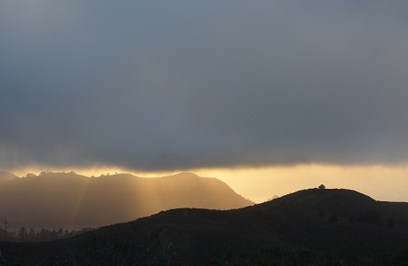
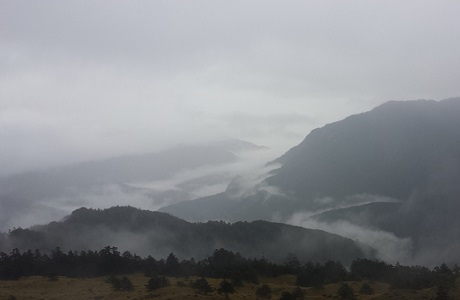
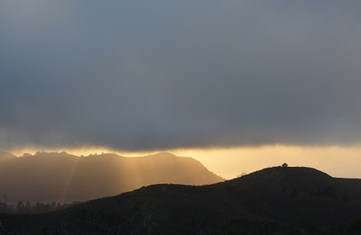
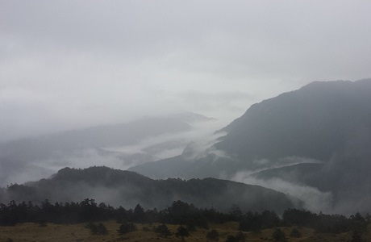
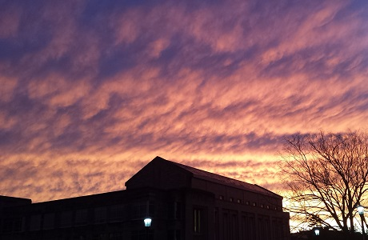
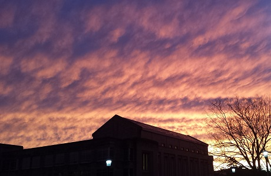
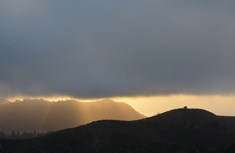
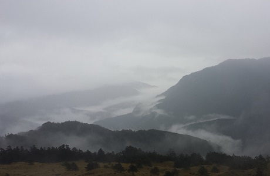
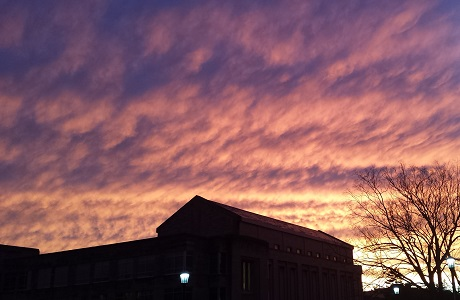

 

The atmosphere is a significant component of our Earth. It is the component of Earth which helps you breath, allows living plants to grow, aids in warming the surface of the Earth - it is no doubt important. Without it, there probably would be no sound. It is a critical part of the Earth that we live in. Without it, you probably would not have pictures such as this (all taken by me):



Let us just take a small glimpse of the atmosphere, our main medium for where air pollution resides. It is divided into several parts:
First - the troposphere. It comes from the greek prefix "tropein", or "to change/to turn". This is this is the first layer of the atmosphere you encounter when going up, which has a lot turbulent mixing (hence the "turning and changing.") The troposphere is the layer that we live in. Most chemicals in the atmosphere reside here, and a lot of the action happens at this level. Thunderstorms, fog, rain, air pollutants reacting with each other, etc. All this happens in the layer that we live in. It extends from about 0 - 10 kilometers, more or less.
The layer on top of the troposphere is the stratosphere. It comes from the prefix "strata", which means layered. The stratosphere isn't as intensly packed with much action as where we live. Nevertheless, it plays a huge role. As we shall see later, the stratosphere contains much ozone - which protects us from harmful ultraviolet radiation from the sun. But the ozone must reside in the stratosphere - if it is found in the troposphere, it is dangerous and a pollutant. We'll discuss more of this interesting point later. It extends from about 10 - 50 kilometers upwards, more or less.
The mesosphere, the layer on top of the stratosphere, is not well understood at this point. Meteors may dissipate at this layer. It extends from about 50 to 85 km upwards, more or less.
The thermosphere, the last major layer of the atmosphere, is quite interesting. It gets quite hot here - but not in the way that a normal person would think. There are very few molecules here compared to the surface - yet each has a large amount of energy associated with it by intense radiation from the sun. Would a person feel cold in thermosphere? Perhaps - as the way the body sees it - but believe it or not, the thermosphere can have quite a high temperature. Light atoms along with single oxygen atoms may be found here. Some really light particles, such as protons, can escape into the exosphere, the entrance to space.
And in all this, the mass of this atmosphere that we live in is 5 x 1018 kilograms, a huge number. The atmosphere is 78% nitrogen, 21% oxygen, 0.93% argon, and of course, then there's everything else which contributes a small fraction (but can still have a significant impact). Water vapor can vary, being close to almost 0 to 4% of the atmospheric composition, depending on a variety of factors.
In our atmosphere, there are a number of pollutants. Some are natural, such as sea salt, dust, and fire from forests. Even some trees emit pollutants without human intervention. Nontheless, we emit pollutants too - through our cars, through planes, and largely due to factories. Of course, it would not be economically viable to stop all our cars, planes and factories, so air pollution then becomes a complex issue.
We can emit pollutants directly-these are called primary pollutants. This includes a class of compounds called hydrocarbons. Other compunds are primary pollutants, such as sulfur dioxide, ammonia and soot. However, some chemicals undergo reactions with others to create secondary pollutants - these include chemicals such as hydrogen peroxide, nitric acid, ozone, and the nitrate and sulfate ions. Some chemicals, such as carbon monoxide, are both primary and secondary pollutants. If you explore the exercise below, you will see that air pollution leads to some pretty bad things.
EXERCISE:
Research the following events: 1930 Meuse Valley Fog, 1948 Donora Smog Event, 1952 London Smog, Los Angeles Air Quality in 1943. Read as much of these events as you want, and get a general idea about the significance of air pollution. When you are done, research air pollution in Beijing and read what you can.